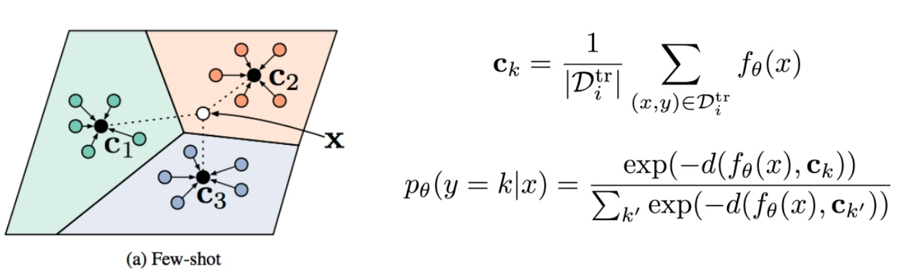

Few and Zero-Shot Learning assignment¶
This assigment must be submitted by March 6th using Moodle
Prototypical Networks¶
In this exercise we will experiment with prototypical networks1, training a model for -shot, -way classification. For this, we will work with the Omniglot dataset2, which includes 1623 handwritten characters from 50 different alphabets. You can see some samples of this dataset below:
As discussed in the theory contents, the basic idea of prototypical networks resembles nearest neighbors to class prototypes. They compute the prototype of each class using a set of support examples and then calculate the distance between the query example and each the prototypes. The query example is classified based on the label of the prototype it’s closest to, as can be seen in the following figure:

In summary, is a softmax function to the negated distances between a given query example and each prototype.
If you think that you didn't fully understand prototypical networks after reading the provided materials, please see also this video, which clearly explains their foundations.
Exercise 1¶
First, open this Colab notebook which contains some code to be completed with TODO marks. You need to save a copy of this notebook to your Google Drive in order to make edits, and then upload the final .ipynb to Moodle.
-
Review and understand the code in the class
OmniglotEpisodicDataset. The sampled batch is partitioned into support, i.e. the per-task training data, and query, i.e. the per-task test datapoints. The support will be used to calculate the prototype of each class and query will be used to compute the distance to each prototype. -
Complete the code with TODO marks in the
trainfunction. For implementing you can use directly the Pytorch functionCrossEntropyLoss, since it is a combination of softmax and cross-entropy. Specifically,CrossEntropyLoss(x, y) := H(one_hot(y), softmax(x)), whereone_hotis a function that takes an index and expands it into a one-hot vector. -
Run the training cell. After 20 epochs, the average loss when running in Google colab should be similar to 0.017.
-
Complete the code with TODO marks in the
evaluatefunction. For inference, instead of the loss function you should useargmaxto obtain the predicted labels. -
Run the evaluation code. In Colab, the accuracy should be close to 98.66%.
-
Answer the questions at the end of the notebook and discuss the results.
Few-shot learning using OpenAI GPT¶
We know many of you are GPT fans, so we are going to make an assignment using this tool.
As we have seen in the theory contents, very Large Language Models (LLM) can perform few-shot learning with minimal steps.
Let's test an example by promping the following input to ChatGPT-5:
Input: Subpar acting.
Sentiment: Negative
Input: Beautiful film.
Sentiment: Positive
Input: Amazing.
Sentiment:
Hint: In the GPT interface, if you want to insert a new line without sending the prompt, simultaneously press shift + enter
Run this prompt and check the result. We have just created a sentiment analysis classifier without any line of code, although it may have limitations in more complex scenarios. By using the ChatGPI API you can even integrate your sentiment classifier into a webpage or an app.
This is a simple example, but making reliable prompts for accurate few-shot learning sometimes require additional work. For example, have a look at this paper3. You can see in Fig. 4 how the order and balance of the positive/negative examples can affect the results.
In recent GPT versions, the behaviour is a bit different than in the paper. For example, prompts with N/A are not accepted.
The goal of the following exercise is assesssing your understanding of how to effectively employ few-shot learning techniques on GPT.
Exercise 2¶
In this second exercise, we are going to make a few-shot classifier to classify between rock and hip-hop genres from a short part of song lyrics. To achieve this goal, the classifier must be trained on a few examples of lyrics and their corresponding labels. Then, given new lyrics, it should ideally predict the song genre.
For this exercise, you should use ChatGPT on a browser.
Before starting the experiments, please check first the model version:
Which model version are you?
Then you must ensure that the model operates entirely based on its pre‑trained internal knowledge and does not perform live lookups or access external databases in real time. For this, the first prompt should be:
For the following prompts, do not use internet access and use only your internal knowledge
Then, create sample prompts like in this example:
Input: Bitterness and burden
Curses rest on thee
Solitaire and sorrow
All eternity
Save the Earth and claim perfection
Deem the mass and blame rejection.
Output: Rock
Input: Tell me who you loyal to
Is it money? Is it fame? Is it weed? Is it drink?
Is it comin' down with the loud pipes and the rain?
Big chillin', only for the power in your name.
Output: Hip-hop
You can find more examples in this link, where you can search lyrics by genre or artist.
The goal is to effective prompts, and check if ordering of the samples and balance of the classes may affect the results. For our few-shot scenario, try with labeled samples for each of the 2 classes.
Once done, please submit a PDF file (via Moodle) with the experiments you made and the conclusions.
Assessment criteria¶
- Prompt Engineering: Students will be evaluated on their ability to engineer effective prompts that leverage the few-shot examples. This includes the clarity of the prompt, the relevance of the examples to the test case, and the prompt's ability to guide the model towards the desired output.
- Model Interaction: Students may need to iteratively refine their prompts based on the model's responses, demonstrating an understanding of how different prompt structures influence the outcome.
- Critical Analysis: In addition to generating outputs, students should critically analyze the model's performance, identifying any biases, errors, or limitations in the generated responses.
-
Jake Snell, Kevin Swersky, and Richard Zemel. Prototypical networks for few-shot learning. In I. Guyon, U. V. Luxburg, S. Bengio, H. Wallach, R. Fergus, S. Vishwanathan, and R. Garnett, editors, Advances in Neural Information Processing Systems, volume 30. Curran Associates, Inc., 2017. ↩
-
Brenden M. Lake, Ruslan Salakhutdinov, and Joshua B. Tenenbaum. Human-level concept learning through probabilistic program induction. Science, 350(6266):1332–1338, 2015. URL: https://www.science.org/doi/abs/10.1126/science.aab3050, arXiv:https://www.science.org/doi/pdf/10.1126/science.aab3050, doi:10.1126/science.aab3050. ↩
-
Tony Z. Zhao, Eric Wallace, Shi Feng, Dan Klein, and Sameer Singh. Calibrate before use: improving few-shot performance of language models. CoRR, 2021. URL: https://arxiv.org/abs/2102.09690, arXiv:2102.09690. ↩
-
Gemini Team et al. Gemini: a family of highly capable multimodal models. 2023. arXiv:2312.11805. ↩